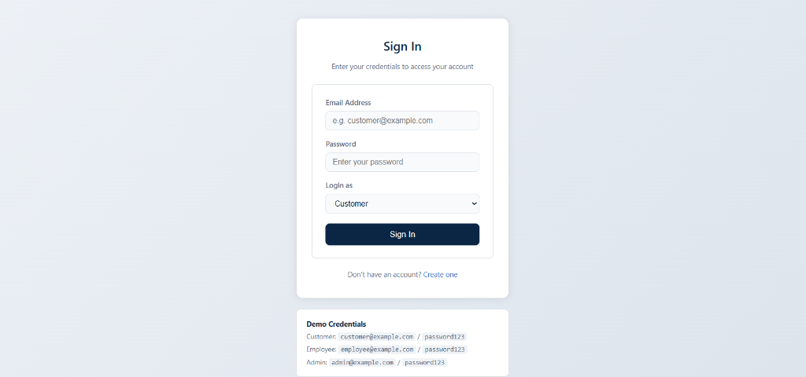

An Enterprise 3-Tier Banking System Demonstrating Advanced OOP, 3NF Relational DBMS & ACID Transactions
Course: OOP in Java & DBMS Lab
Tech Stack: Java 11+ REST Backend | MySQL 8.0 (12 Tables in 3NF) | Vanilla JS Frontend
Capabilities: ACID Transfers, Account Freeze, KYC Profile, 22/22 Automated Tests Passed
Addressing architectural bottlenecks in traditional banking software
End-to-end decoupled request/response pipeline
Vanilla HTML5/CSS3/ES6 JavaScript Web Portal and Java Swing GUI. Communicates via asynchronous REST JSON calls (fetch API).
Embedded Java HttpServer (Port 8080) with REST Handlers. OOP Domain Models & Services (Transaction, Account, Loan).
12 Relational Tables in 3NF. Enforces Foreign Keys, CHECK (balance >= 0) constraints, and ACID transaction locks.
Paste 3-Tier Layered Diagram or System Flow
Real-world implementation of the four OOP pillars in Java
Financial fields (balance, accNo) are private/protected. Mutations require synchronized methods using BigDecimal precision.
Person -> Customer & Employee. Account base -> SavingsAccount, CurrentAccount, FixedDepositAccount.
Overridden withdraw(): SavingsAccount checks min-balance, CurrentAccount allows overdraft, FD blocks early exit.
Abstract Account class prevents invalid instantiation while compelling concrete subtypes to define interest logic.
Paste Screenshot of Account.java or Class Hierarchy Diagram
12 Relational Tables in Third Normal Form in MySQL InnoDB
CHECK (balance >= 0) and CHECK (status IN ('ACTIVE','FROZEN','CLOSED')).Paste Screenshot of MySQL Tables or SHOW TABLES output
Ensuring atomic financial consistency during inter-account transfers
conn.setAutoCommit(false) -> Row Lock -> Debit Sender -> Credit Receiver -> Audit Log -> conn.commit()
On Error: conn.rollback() returns database to exact original state.
Both debit and credit succeed together, or both rollback.
Balance non-negative invariants are strictly preserved.
InnoDB row locks prevent lost updates during transfers.
Committed records written to MySQL Redo Log (WAL) on disk.
Paste Screenshot of transferFunds() code or Terminal log
Clean, student-made, responsive vanilla web design with zero framework overhead
localStorage.checkAuth() guard checks session and strictly blocks Customers from Admin controls.fetch() with async/await updates balance cards and tables seamlessly without page reloads.
Comprehensive self-service banking operations for account holders
Account balance summary card with INR formatting, quick action shortcuts, and recent 5 transactions ledger.
Immediate crediting and debiting with instant validation preventing negative balance states.
Atomic inter-account money transfer with automatic debit/credit balance reconciliation in MySQL.
Open additional Savings/Current/FD accounts, apply for loans, and update verified KYC contact details.
Paste Screenshot of Customer Dashboard / Transfer Form
Operational control center for bank staff and system administrators
Real-time overview of all customer accounts across branches, showing live balances, account types, and operational statuses.
One-click security freeze on suspicious accounts. Frozen accounts are locked from withdrawals and transfers at API and DB layers.
Staff review pending loan applications (amount, category, tenure) and execute single-click Approve / Reject actions with real-time MySQL updates.
Paste Screenshot of admin.html and loans.html
Immutable financial ledger auditing with server-side query filters
Paste Screenshot of transactions.html with Date/Type filters
Comprehensive 22-step End-to-End and API test suite validating stability
22 / 22
PASSED (100% SUCCESS)
Validated Coverage: Auth HTTP 200/401, Deposit/Withdraw Precision, Atomic Transfer Consistency, Negative Balance Prevention, Bad Input Sanitization, and Filtered Query Validation.
Paste Screenshot of SystemTest.java output showing 22 [PASS]
Standard, high-performance tools with zero unnecessary third-party overhead
• Java 11+
• Core OOP Models
• Embedded HttpServer
• Connector/J 8.3.0
• Port 8080 REST API
• MySQL 8.0 Server
• InnoDB Engine
• 12 Tables in 3NF
• ACID Row Locks
• Foreign Key Rules
• Semantic HTML5
• CSS3 Variables
• Vanilla ES6 JS
• fetch() REST Client
• localStorage Session
• VS Code & Terminal
• Git & GitHub
• MySQL Workbench
• Batch Scripts (.bat)
• SystemTest Runner
• Built a production-grade 3-tier banking system from scratch.
• Successfully bridged Java OOP domain models with a 3NF normalized MySQL database.
• Enforced strict ACID transactional integrity on all inter-account operations.
• Verified 100% test pass rate across 22 automated integration tests.
We are now ready for Questions & Live System Demonstration
github.com/patilmanasvi/Bank-Management-System